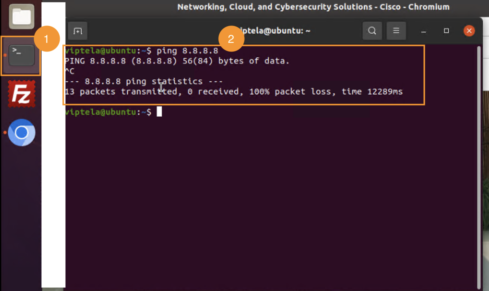
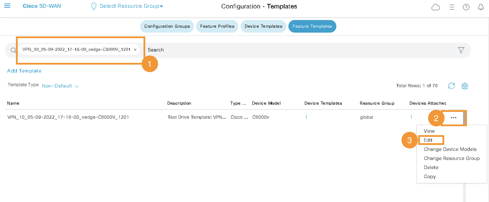
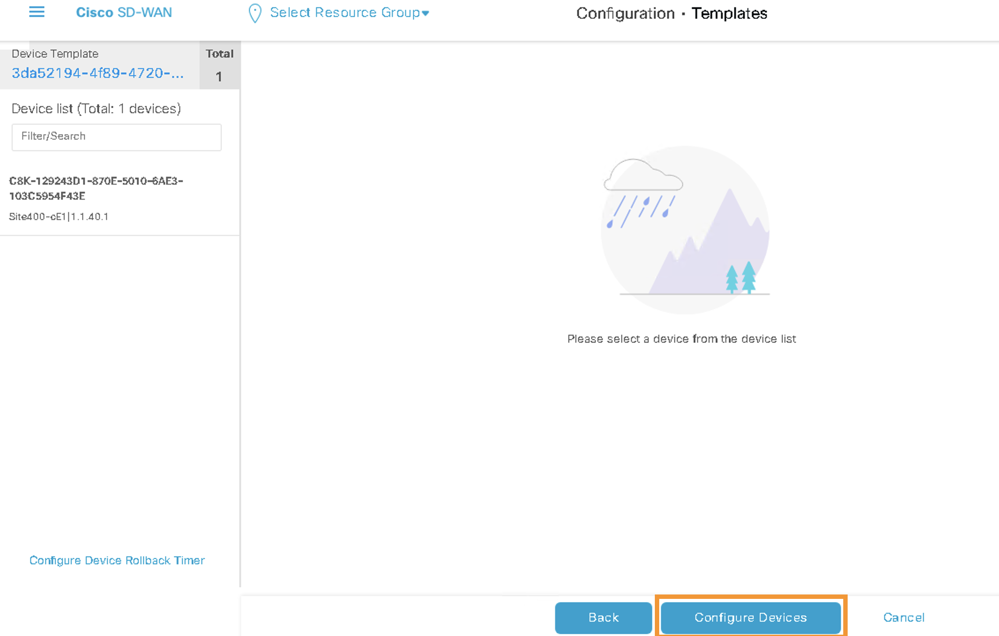
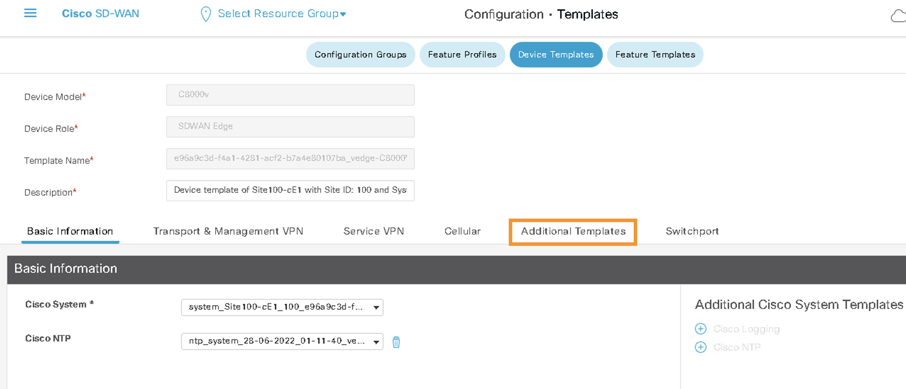
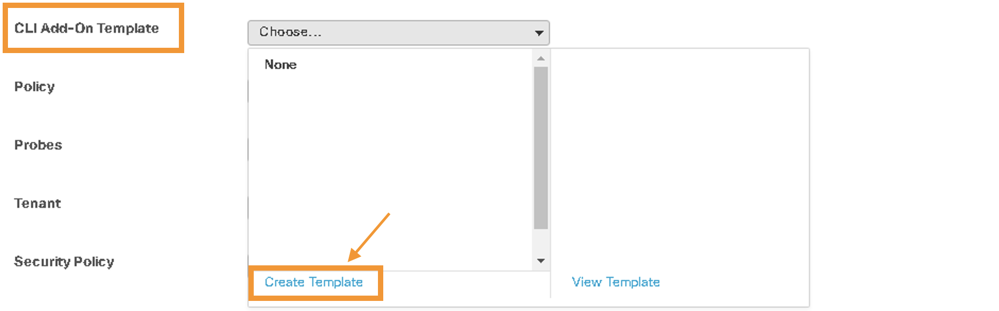
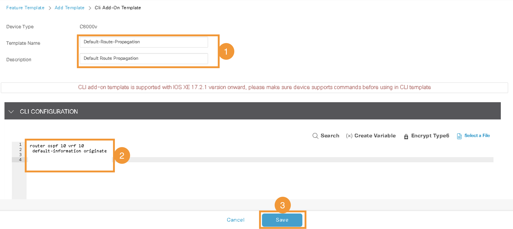

Task 3 - Internet Access for All Sites
In this task, our primary goal is to enable internet access for VPN-10 at Site-100. We will achieve this by routing the VPN-10 traffic through the Global Routing Table. The process involves a series of structured steps:
1. Enabling Internet Access for VPN-10 on Site-100: We will start by configuring Site-100 to allow VPN-10 traffic to access the internet through the Global Routing Table. This is a crucial step in ensuring that Site-100 can serve as a gateway for internet access.
2. Propagating the Default Route: The next significant step is to propagate a default route from Site-100 to other sites within the network (specifically Site-400 and Site-300) that are also on VPN-10. By doing this, we essentially enable Site-400 and Site-300 to use Site-100 as their default gateway on VPN-10.
3. Routing Internet Traffic via Site-100: Consequently, both Site-400 and Site-300 will begin routing their internet traffic through Site-100. This is achieved by efficiently utilizing the SD-WAN Fabric, which facilitates the traffic flow between these sites.
4. Verification and Testing: Throughout the task, we will conduct a series of verifications and tests. These are designed to ensure that each step is successfully implemented and that internet connectivity is reliably established across the sites on VPN-10.
By the end of this task, we will have established a streamlined and efficient routing mechanism that leverages Site-100 as a pivotal access point for internet connectivity for VPN-10 across multiple sites.
Step 1 – Verify No Internet Access on VPN-10 of Site-400 and Site-300
Objective: Confirm that there is currently no internet access on VPN-10 for both Site-400 and Site-300.
1. Launching mRemoteNG:
- On your RDP session, open the
mRemoteNGapplication. This application provides access to the console of all Ubuntu machines (Virtual Machines/hosts) on the respective LANs (VPNs) of the SD-WAN sites.
2. Accessing Site-400's VM:
- In the
mRemoteNGapplication, underVNC Sessions, click onSite400-Ubuntu-VPN10. This VM is located on the VPN-10 (LAN segment) of Site-400.
3. Logging into the Ubuntu VM:
- If the console is locked, click on the console screen.
- Use the following credentials to log in:
- Username:
ubuntu - Password:
viptela
4. Testing Internet Browser Access:
- On the Ubuntu desktop, click on the
Chromium Web Browsericon to launch it.
- Try accessing an internet website, such as
cisco.com. The access should fail, indicating no internet connectivity.
5. Testing Network Connectivity:
- Open the
Terminalapplication by clicking its icon on the desktop. - In the Terminal, execute
ping 8.8.8.8and pressCtrl+Cafter a few seconds to stop the ping. A failed ping with 100% packet loss indicates no internet access. 
6. Repeating the Process for Site-300:
- Use
mRemoteNGto access the console ofSite300-Ubuntu-VPN10. - Repeat the steps to verify the absence of internet access on this VM as well.
Step 2 - Enable Internet on VPN-10 of Site-100
Objective: Route traffic from VPN-10 on Site-100 to the Global Routing Table (GRT), also known as VPN-0, to enable internet access.
1. Launching MTPutty:
- Start the
MTPuttyapplication. You can find it either on the Desktop or in the Taskbar of your RDP session (Jumphost).
2. Accessing Site-400 cEdge:
- Use MTPutty to SSH into
Site400-cE1cEdge. - Select the saved
Putty sessionfor Site400-cE1. - When prompted, enter the following credentials:
- Username:
admin - Password:
admin
3. Verifying the Routing Table:
- Execute the command
show ip route vrf 10to check the routing table. - Confirm that there is no default route in VRF-10.

4. Configuring Default Route on Site100-cE1:
- Now, let's add a default route in VPN-10 pointing to VPN-0 on the Site100-cE1 node.
- This is done by modifying the
Feature Templatefor VPN-10 in the vManage GUI.
5. Editing Feature Template in vManage:
- Navigate to Configuration > Templates on vManage.

- Click on the
Feature Templatestab.
- Use the search bar to find the template named
VPN_10_05-09-2022_17-18-00_vedge-C8000V_1201. - Click the three dots
...beside the template and selectEdit. 
6. Adding IPv4 Route:
- On the editing page, click on
IPv4 Route.
- Perform the following configurations in the
IPv4 Routesection: - Click
New IPv4 Route. - Enter
0.0.0.0/0in Prefix. - Select
VPNin Gateway. - Choose
Globalfrom the dropdown menu in Enable VPN. - Set Enable VPN to
On.
- Click
Addand thenUpdateto save the changes.
7. Applying the Configuration:
- Click
Nextto proceed with the configuration.
- Select
Configure Devicesto push the configuration from vManage to the cEdge device.  - Wait and confirm that the configuration push from vManage to the cEdge device is successful.

Result: By completing these steps, VPN-10 on Site-100 will be configured to route its internet traffic through the Global Routing Table (VPN-0), enabling internet access.
Step 3 - Default Route Propagation from Site-100 on VPN-10
Objective: Propagate the default route from Site-100 to other sites over the SD-WAN Fabric, following the configuration of VPN-10 traffic routing to the Global Routing Table (VPN-0) on Site100-cE1.
1. Navigating in vManage:
- In vManage, go to Configuration > Templates.
2. Accessing Device Templates:
- Click on the
Device Templatestab.
3. Editing Site-100 Device Template:
- Find
Site-100Device Template and click on the three dots (...) at the right side of it.
4. Working with Additional Templates:
- Click on
Additional Templates. 
5. Creating a CLI Add-on Template:
- From the
CLI Add-on Templatedropdown menu, selectCreate Template. 
6. Configuring CLI Add-on Template:
- Enter the following information in the template:
- Template Name:
Default-Route-Propagation - Description:
Default Route Propagation - In the
CLI configurationbox, input:router ospf 10 vrf 10 default-information originate - Click
Saveafter entering the commands. 
7. Applying the Configuration:
- Click
Update, followed byNext, and thenConfigure Devices. - This step applies the configuration across the network.
- Wait for the confirmation message indicating successful configuration push by vManage and application by cEdge.
Result: The default route on VRF/VPN-10 is now configured and propagated from Site-100 across the SD-WAN fabric.
Step 4 - Verify Internet Connectivity on VPN-10 of Site-400
Objective: Verify the successful establishment of internet connectivity on VPN-10 for both Site-400 and Site-300 following the configuration changes.
1. Re-launching MTPutty if Needed:
- If the MTPutty application is not open, launch it again on your RDP session.
2. SSH/Login to cEdges:
- SSH/Login to
Site400-cE1andSite300-cE1cEdges by clicking on their respective names in the savedPutty sessions.
3. Verifying the Routing Table:
- Use the command
show ip route vrf 10to verify the routing table for both nodes (Site300-cE1 and Site400-cE1). - Confirm that both nodes are receiving the default route on VRF/VPN-10.

4. Checking Internet Access on Site-400:
- Log in again to the Ubuntu VM named
Site400-Ubuntu-VPN10using the mRemoteNG application. - Launch the
Chromium Web Browseron the Ubuntu VM and navigate to an internet site, such ascisco.com. - The internet access should now be functioning properly.

5. Testing Connectivity with Ping:
- Open the
Terminalapplication on the Ubuntu VM. - Issue the ping command
ping 8.8.8.8. - This time, the ping should be successful, indicating internet connectivity.

6. Performing Traceroute:
- In the Terminal application on the Ubuntu VM, execute a
traceroutewith the following command:traceroute 8.8.8.8.
7. Repeating for Site-300:
- Repeat the above steps to confirm internet access for VPN-10 of Site300.
- This involves verifying the ip route on VPN-10 on
Site300-cE1and then checking internet connectivity on the Ubuntu VMSite300-Ubuntu-VPN10.
Result: Internet connectivity on VPN-10 for Site-400 and Site-300 should now be successfully established and verifiable through the above tests.